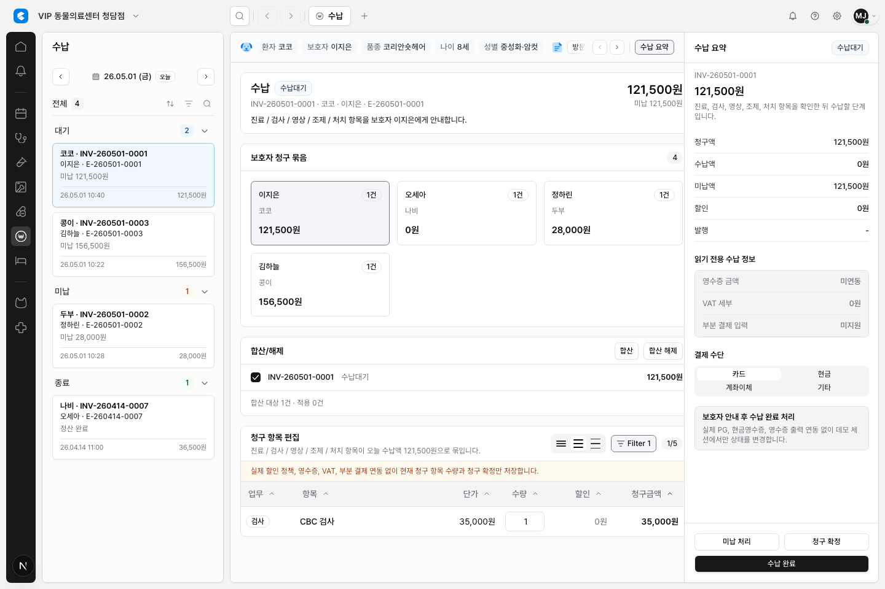
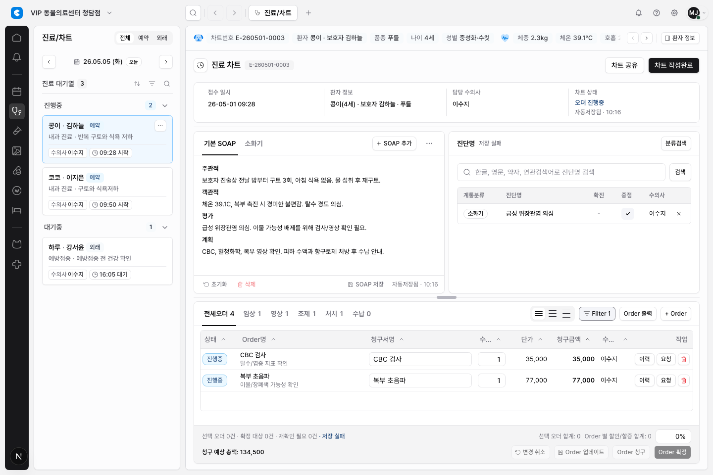
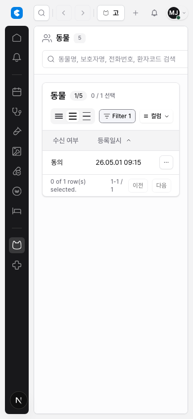
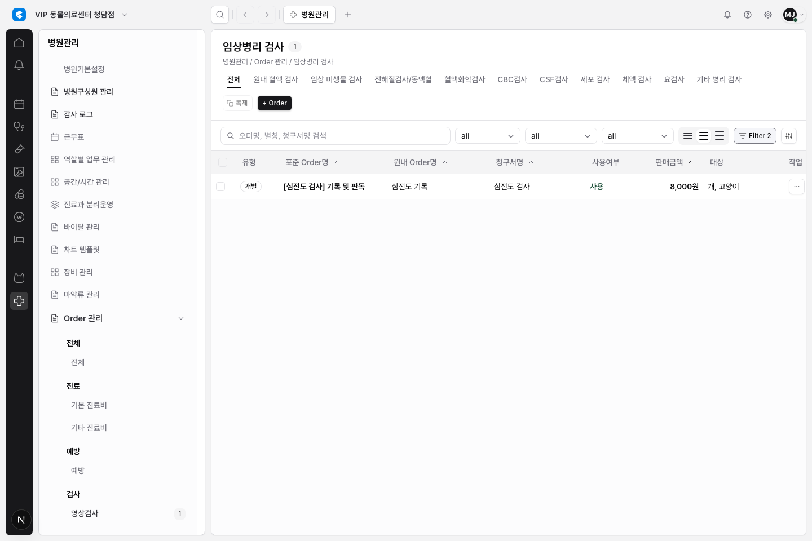

Final Sort / Filter Behavior Closeout
Project 13은 테이블 정렬과 필터를 같은 방식으로 쓰기 위한 기준을 정하고, 대표 테이블에 제한 적용한 뒤 QA까지 마쳤다. 결론은 명확하다. 헤더에는 정렬만 두고, 필터는 섹션 우측 Filter 버튼에서 여는 방식이 현재 제품 프로토타입에 맞는 기본 정책이다.
최종 정책
- 테이블 헤더에는 단일 컬럼 정렬만 제공한다.
- 필터는 테이블이 속한 섹션 header/action area의
Filter버튼에서 연다. - 필터 조건이 있으면 버튼은
Filter N으로 조건 개수를 표시한다. - 필터 builder의 여러 조건은 AND로 적용한다.
- builder footer에는
초기화,Apply filters,Close를 둔다. - checkbox, action, icon-only, summary, total, display-only 컬럼은 정렬/필터 대상에서 제외한다.
- active chip row, saved view/filter, multi-sort, URL/storage persistence는 이번 프로젝트 범위 밖이다.
이슈별 결과
| 이슈 | 결과 | 상태 |
|---|---|---|
| DEN-270 | 정렬/필터 behavior contract와 prototype option을 정리했다. | Done |
| DEN-271 | 수납 청구 항목 테이블에 첫 real sort/filter pilot을 적용했다. | Done |
| DEN-272 | 차트 오더 테이블에 같은 정책을 적용했다. | Done |
| DEN-273 | 고객관리 동물/보호자 workflow에 같은 정책을 제한 적용했다. | Done |
| DEN-274 | 병원관리 오더 카탈로그 테이블에 같은 정책을 제한 적용했다. | Done |
| DEN-275 | 적용된 테이블 전체를 QA하고 screenshot evidence를 남겼다. | Done |
| DEN-276 | 프로젝트 최종 closeout과 남은 제외 범위를 정리했다. | Human Review |
적용된 테이블
| 화면 | 적용 요약 | 보존한 workflow |
|---|---|---|
| 수납 청구 항목 | 항목명, 분류/상태, 수량, 단가, 금액 등 안정적인 visible field 정렬과 section filter. | 수량 편집, 합계, 청구 확정, 결제 dialog. |
| 차트 오더 | 그룹, 타입, 상태, 오더명, 청구명, 수량, 금액, 담당자 기준 정렬과 compact filter. | 오더 draft, 타입 탭, 오더 수정/확정, 차트 workflow. |
| 고객관리 | 동물번호, 동물명, 생년월일/나이, 등록일, 보호자명, 동의 상태 중심 정렬/필터. | 상세 drawer, 행 선택, 행 action, 컬럼 표시, 밀도, mock/session workflow. |
| 병원관리 오더 카탈로그 | 표준오더명, 병원오더명, 청구명, 판매금액 정렬과 상태/동물종/서비스/청구/금액 필터. | 카테고리 navigation, 검색, 기존 상태/청구/work-type controls, detail drawer. |
Evidence
DEN-275 QA에서 mock auth로 실제 workspace 화면을 캡처했다.




관련 보고서
- DEN-270 behavior contract report
- DEN-270 prototype options
- DEN-271 billing pilot report
- DEN-272 chart/order adoption report
- DEN-273 customer adoption report
- DEN-274 hospital admin adoption report
- DEN-275 adopted table QA report
검증 요약
- Passed DEN-271~275 focused Playwright checks recorded in each report.
- Passed DEN-275 cross-table QA: billing, chart, customer, hospital admin specs plus adopted table QA spec.
- Passed DEN-275 implementation checks:
npm run lint,npx tsc --noEmit,npm run docs:check. - Passed DEN-276 docs closeout checks:
npm run docs:check,git diff --check.
남은 제외 범위
이번 프로젝트는 대표 테이블에 제한 적용한 UX behavior 프로젝트다. 전체 테이블 일괄 적용, saved view/filter, active chip row, multi-sort, URL/localStorage/session persistence, Supabase/DB/RLS/server-side sorting and filtering, live validation, pricing model, role policy, production data, external integration은 포함하지 않는다.
결론
Project 13은 대표 검토에 올릴 수 있는 상태다. 승욱이 결과를 승인하면 DEN-276과 Project 13을 Done으로 이동하면 된다. 다음 확장은 별도 Linear issue에서 특정 테이블 또는 특정 workflow 단위로 시작하는 것이 안전하다.